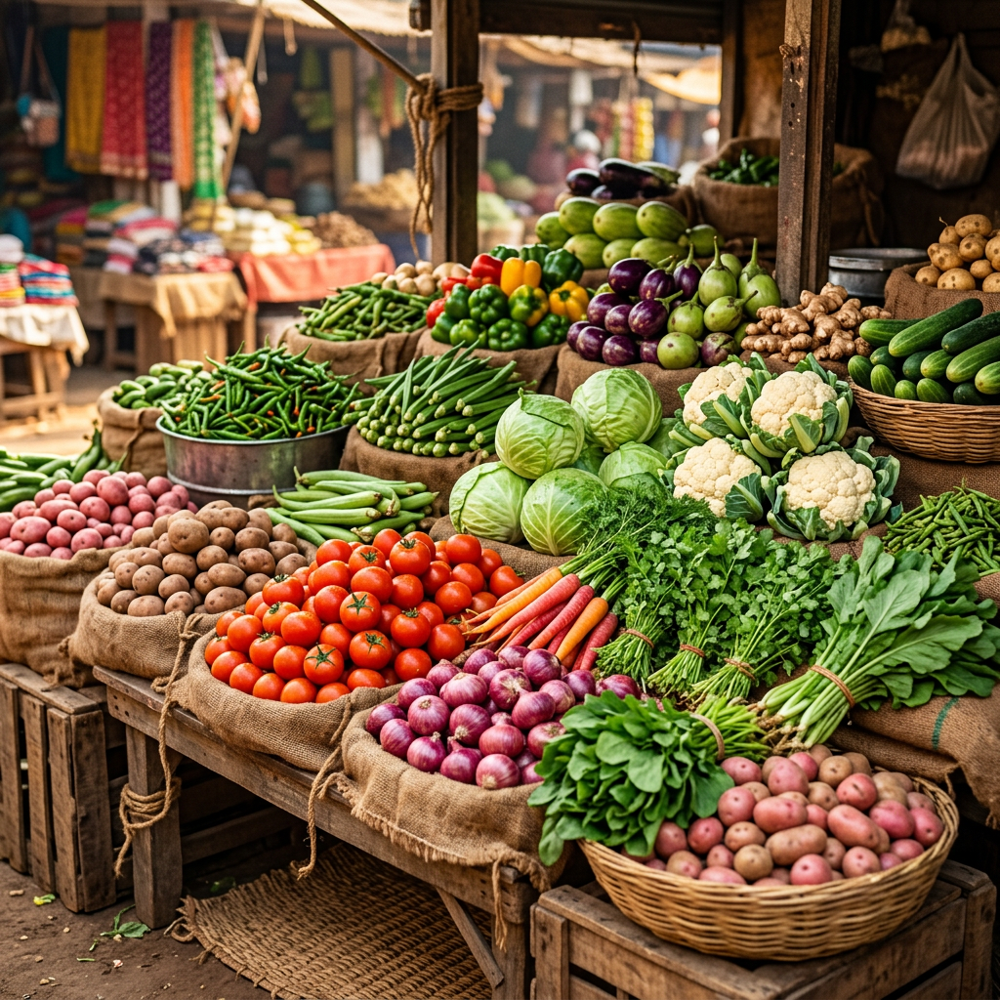
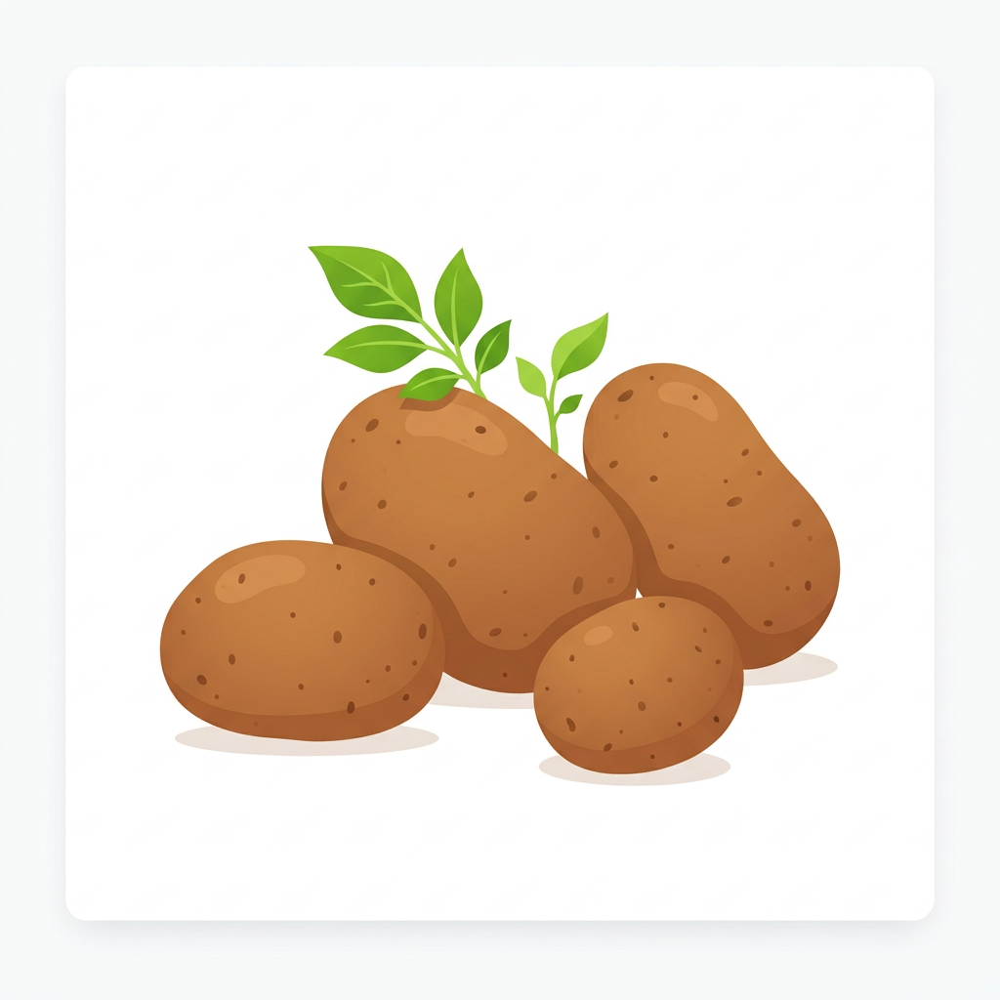
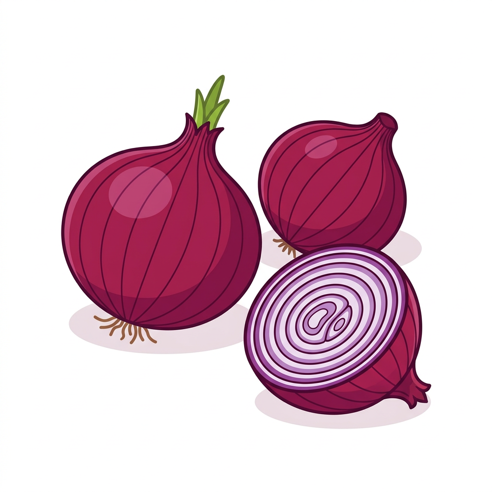
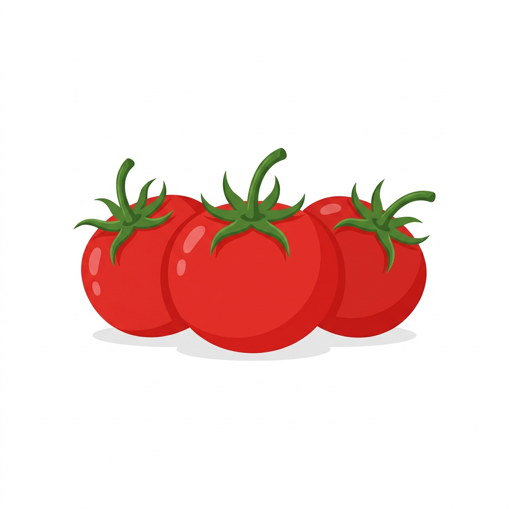
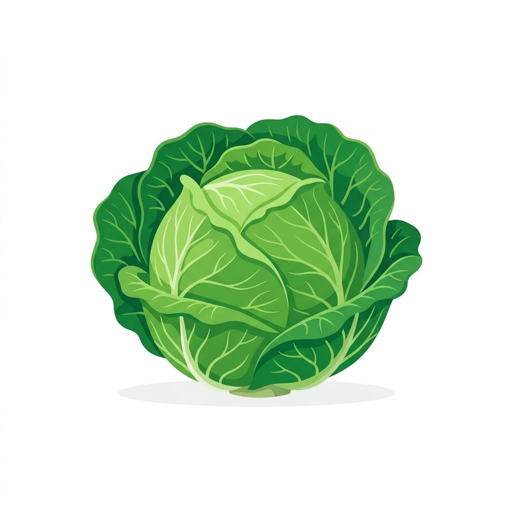
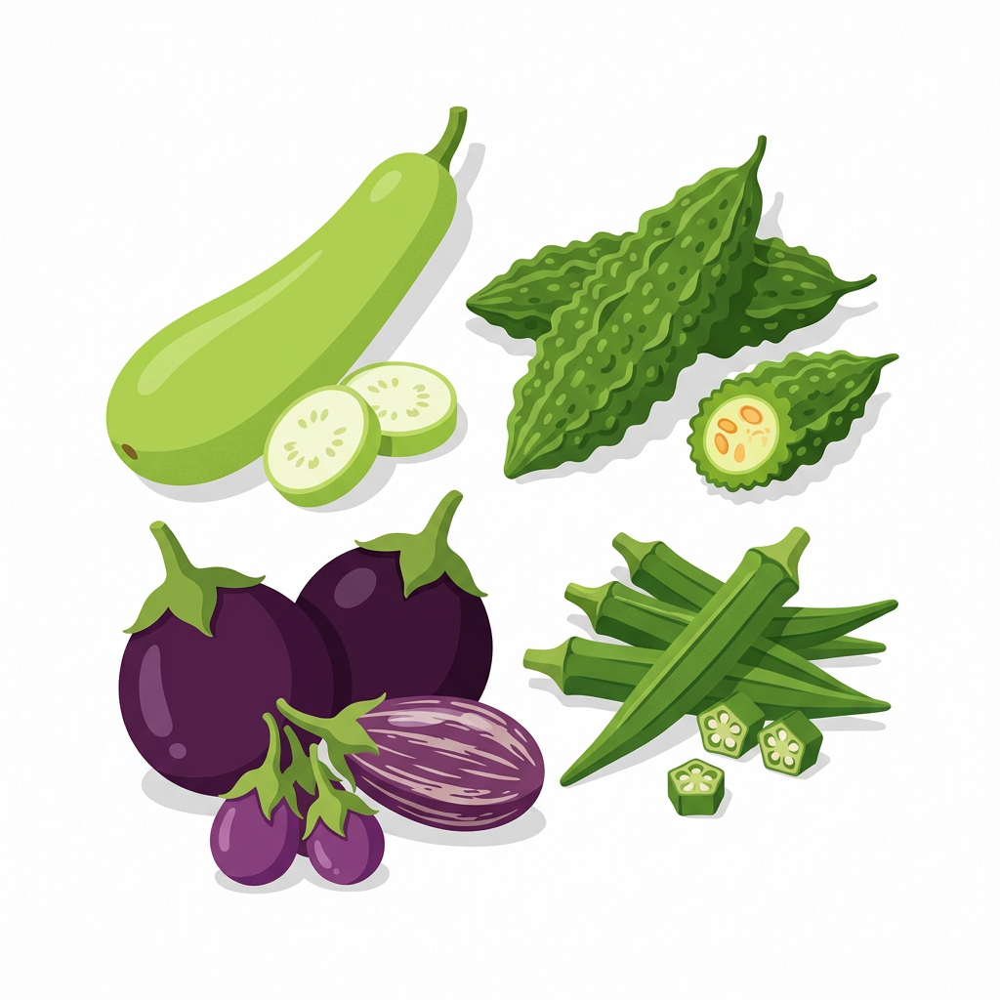
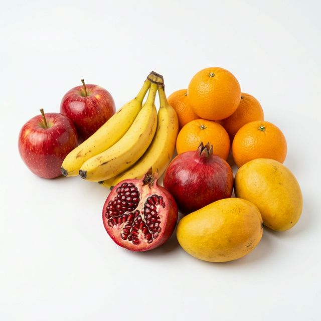
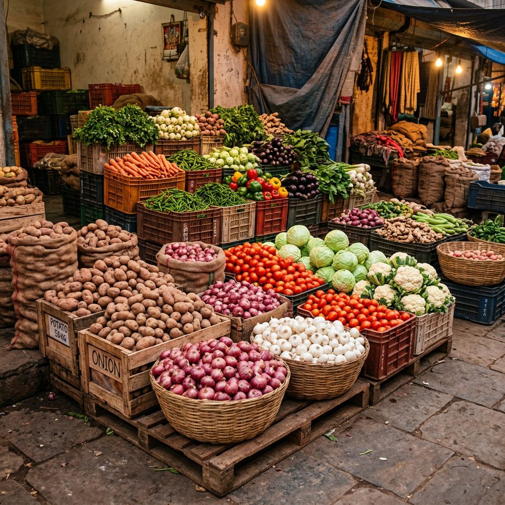

चम्पारण सब्जी भंडार — रोज़ ताज़ी सब्जियाँ, फल और थोक सप्लाई
Fresh vegetables & fruits daily from local mandi. Wholesale supply for weddings, parties & catering in Bettiah, West Champaran.
बेतिया के Bazar Samiti, हरिवाटिका शिव मंदिर के पास स्थित Champaran Sabji Bhandar — यहाँ हर सुबह मंडी से चुनकर ताज़ी सब्जियाँ लायी जाती हैं। हमारा मकसद है कि बेतिया के हर घर में ताज़ी और किफ़ायती सब्जी पहुँचे।
दुकान के मालिक रवि कुमार गुप्ता (Ravi Kumar) की दुकान पर हर दिन मंडी से ताज़ी और उच्च गुणवत्ता वाली सब्ज़ियाँ सीधे सप्लाई की जाती हैं, जिससे ग्राहकों को हमेशा बेहतरीन गुणवत्ता मिलती है। चाहे रोज़मर्रा की ज़रूरत हो या शादी-पार्टी के लिए थोक ऑर्डर — यहाँ हर प्रकार की सब्ज़ियाँ उचित दाम पर उपलब्ध हैं।
Located in the heart of Bettiah, West Champaran, our shop provides hand-picked fresh vegetables daily from local mandi. Owner Ravi Kumar personally selects every batch to ensure quality. We serve families, restaurants, and provide bulk wholesale for weddings & events.
रोज़ सुबह मंडी से चुनकर लायी गयी ताज़ी सब्जियाँ। Quality checked and hand-picked every morning in Bettiah.

आलू
Daily Available
प्याज
Daily Available
टमाटर
Daily Available
पत्ता गोभी
Daily Availableफूल गोभी
Daily Availableहरी सब्जियाँ
Daily Available
मौसमी सब्जियाँ
Seasonal
ताज़े फल
AvailableFrom daily vegetables to wedding bulk supply — सब कुछ एक ही जगह, Champaran Sabji Bhandar, Bettiah.
रोज़ सुबह मंडी से चुनकर लायी गयी ताज़ी सब्जियाँ — आलू, प्याज, टमाटर, गोभी और बहुत कुछ।
सेब, केला, संतरा, अनार — मौसम के अनुसार ताज़े फल हमेशा उपलब्ध। Fruit wholesaler in Bettiah.
रेस्टोरेंट, ढाबा, होटल के लिए रोज़ाना थोक सब्जी सप्लाई। Sabji wholesaler in Bettiah — competitive prices.
शादी, पार्टी या बड़े इवेंट? WhatsApp पर लिस्ट भेजें, एडवांस बुकिंग करें — सब तैयार मिलेगा।
हमारे ग्राहकों के अनुभव — जो इस दुकान को खास बनाते हैं।
एक ग्राहक को "ओल" (Aol/Elephant Yam) सब्जी चाहिए थी। 3 दिन तक बेतिया की कई दुकानों पर ढूँढा लेकिन कहीं नहीं मिली। फिर Google पर "sabji dukan near me" सर्च किया और Champaran Sabji Bhandar मिला।
Call किया तो रवि भाई ने कहा — "आप चिंता मत कीजिए, कल तक arrange करते हैं।" अगले दिन सच में ओल तैयार था! ग्राहक इतने खुश हुए कि अब हर बार यहीं से सब्जी लेते हैं।
बेतिया के एक ग्राहक की बेटी की शादी थी। 200+ लोगों के खाने के लिए थोक सब्जी चाहिए थी — आलू 50kg, प्याज 30kg, टमाटर 20kg, और 15 तरह की सब्जियाँ।
उन्होंने WhatsApp पर पूरी लिस्ट भेजी। रवि कुमार ने तुरंत रेट बताया और बस एक छोटी सी बुकिंग से ऑर्डर कन्फर्म कर दिया। शादी के दिन सुबह-सुबह सारी सब्जी ताज़ी, साफ़, और तौलकर तैयार थी — ग्राहक ने खुश होकर कहा, "इतनी आसानी से सब मिल गया, अगली बार भी यहीं से लेंगे!"
आप भी अपना ऑर्डर WhatsApp पर दें — हम तैयार हैं!
💬 WhatsApp पर ऑर्डर करेंबेतिया में शादी, पार्टी, या केटरिंग के लिए थोक सब्जी चाहिए? Champaran Sabji Bhandar — बेतिया का भरोसेमंद sabji wholesaler. WhatsApp पर लिस्ट भेजें, competitive wholesale prices पर सब तैयार मिलेगा।

Come visit us at our shop in Bazar Samiti, Bettiah for the freshest vegetables every day.
Have any questions or need bulk vegetable supply? Reach out to us!